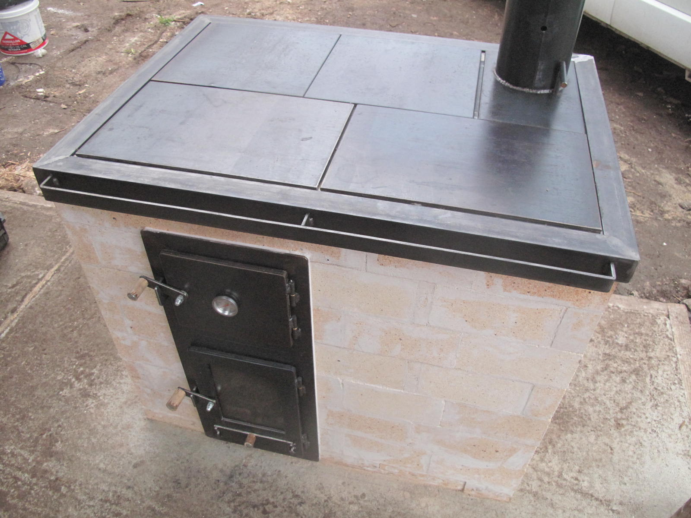
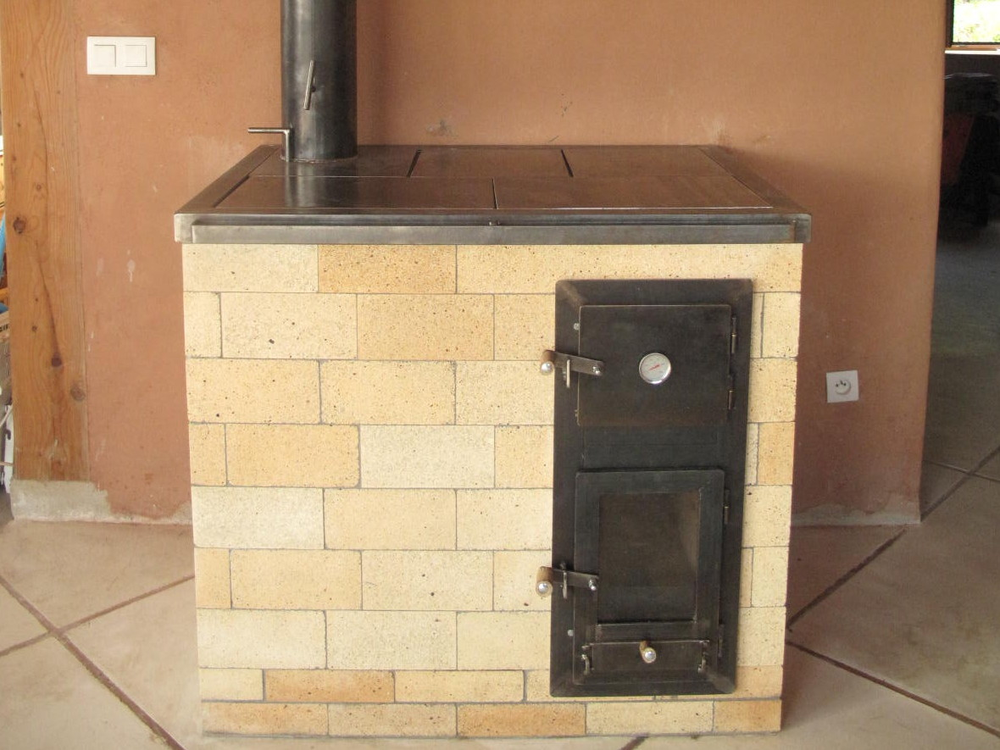
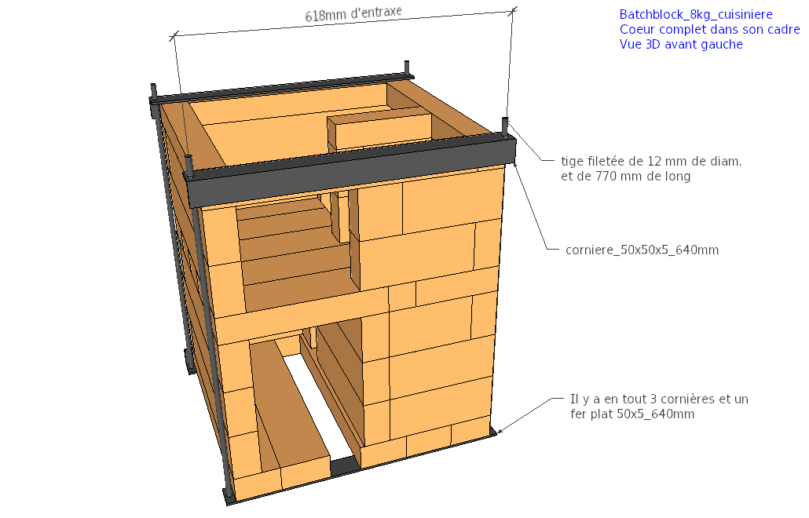
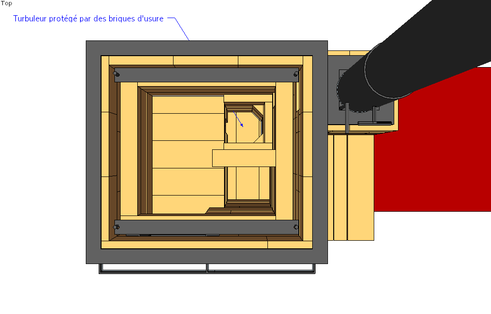

Les plans
Notre objectif est de développer puis de publier les plans d'une série de modèles standards couvrant les différentes puissances/fonctions permises par les poêles de masse.
|
Cuisinière de masse, V5 |
 B14, V2 |
|---|
Cliquez sur une case pour voir la fiche du poêle correspondant.
Les poêles distribués sur cette page sont le fruit de plusieurs milliers d'heures de travail. Au total, nous avons construit une vingtaine de poêles de masse et les différentes conceptions imaginées, dessinées, rejetées sont plutôt de l'ordre 200..
Si vous vous lancez dans la construction d'un de ces poêles et qu'un défaut ou qu'une amélioration possible vous vient à l'esprit, contactez-nous AVANT de maçonner le poêle. Il est possible (mais pas certain !) que nous l'avons déjà testé.
Si un point n'est pas clair, n'hésitez pas non plus à nous contacter.
Simplicité et exigences
Avant de vous lancer nous vous recommandons de prendre le temps de lire entièrement le site D'UZUME, de participer à un de nos stage ou à défaut de vous tester sur la fabrication de notre modèle "bidon".
Commencez par le plus simple pour bien cerner les tenants et aboutissants. Planifiez bien votre construction et ne succombez pas à la tentation d'ajouter d'autres fonctionnalités ou de partir sur un poêle trop complexe dans l'idée d'avoir LE poêle parfait.
Faites une liste de vos exigences (votre "cahier des charges") et voyez si le poêle en question peut répondre à toutes celles ci. Si ce n'est pas le cas, revoyez vos exigences ou faites appel à une personne expérimentée.
Les poêles de masse fonctionnent bien parce qu'ils séparent les fonctions : le foyer brûle le bois et la cloche récupère la chaleur des fumées. Les systèmes tout-en-un créent souvent plus de problèmes qu'ils n'en résolvent :
- Vous voulez un système pour chauffer de l'eau chaude avec du bois ? Faites un poêle dédié au chauffage de l'eau.
- Vous voulez chauffer de pièces éloignées et cloisonnées ? Faites un deuxième poêle de masse, passez sur un autre mode de chauffage, ou isolez votre maison par l'extérieur.
- Vous voulez récupérer la chaleur de votre poêle de masse pour faire un mur ou un plancher chauffant avec circulation d'eau chaude ? Faites un système dédié.
- Vous voulez faire de l'électricité avec la chaleur du bois ? Faites un système dédié.
Un poêle de masse simple, fonctionnel et durable est déjà un moyen de chauffage merveilleux. Tout ajout de système non testé sur le long terme diminuera la durée de vie fiable de votre poêle.
Comme tout système matériel un poêle de masse a ses limites et n'est pas approprié dans tous les cas de figures. Il est possible que dans certaines situations un poêle de masse ne soit pas le meilleur moyen de chauffage.
Remarques générales
Licence :
Les plans que vous trouverez sur cette page et sur ce site sont distribués librement, sous une licence open-source CC BY-SA 4.0 : vous êtes libres de partager, d'utiliser, de transformer ce travail, même pour une utilisation commerciale tant que vous citez les auteurs originaux et que vous partagez les résultats de votre travail sous les mêmes conditions.
La construction d'un poêle de masse implique de nombreuses compétences et, bien que nous tentions de fournir les informations les plus claires possibles, nous ne pouvons garantir la réussite de votre construction. Nous ne donc saurions être tenus responsables de tout dommage, matériel ou immatériel causé à vous ou à vos équipements.
Construction :
Le débit des briques est donné en considérant que la plupart des chutes sont réutilisées. Il donc très important de :
- Découper les briques en partant des plus grandes. Une partie des chutes résultantes seront réutilisées.
- Découper sur le trait de coupe pour que l'épaisseur de la lame soit répercutée des deux cotés.
- Prévoir une marge d'au moins 10% de briques supplémentaires lors de la commande pour anticiper les erreurs de coupe.
Usage :
Voir la page dédiée au Manuel d'utilisation.
Cuisinière de masse, V5
Introduction
Cette cuisinière de masse est le fruit d'un long travail de développement. C'est un intermédiaire entre un poêle de masse purement rayonnant et un poêle en fonte dégageant beaucoup de chaleur par convection. Elle est beaucoup plus réactive qu'un poêle de masse classique, mais en contre partie l'inertie est diminuée et la convection augmentée.
C'est un outil formidable qui peut servir de moyen de chauffage et de cuisson exclusif à une famille pendant l'hiver.. testé et approuvé par les membres d'UZUME !
Un objectif : la durabilité
Cette nouvelle version est équipée de notre nouveau coeur de chauffe renforcé : Le Batchblock. Ce coeur de chauffe est renforcé par une armature métallique qui limite sa dilatation et empêche les mouvements latéraux des briques. Cette précaution n'est PAS superflue et est utilisée par les poêliers les plus expérimentés que nous connaissons (Vital BIES en France ainsi que Kirpichiki en Russie et certains poêliers neerlandais). Tout le coeur est maçonné avec des linteaux (longues briques) pour éviter les points faibles des joints et pour faciliter la construction.
Autour de ce coeur se trouve une deuxième peau qui ne fissurera pas car elle est soumise à des températures bien inférieures.
Le banc de chauffe peut être construit en simple peau et en matériaux non réfractaires car les températures y sont beaucoup plus basses.
Vue 3D du poêle avec et sans banc de chauffe.
Fiche technique :
- Chargement de bois : 8 kg
- Puissance : 3200W avec 3 flambées par jour
- Poids (avec la métallerie, sans le banc de chauffe) : environ 900 kg
- Charge sous le poêle (sans compter le banc): 1160 kg/m2
- Diamètre du conduit de raccordement : 150 mm
- Dimensions : 1070x725mm au sol (sans le banc) et 86 cm de haut
- Temps de travail sur chantier (estimé, hors métallerie, hors fumisterie) : 100 à 150h
- Section du système : 21400 mm2
- SIA de la cuisinière sans le banc et sans conduit de raccordement : 2 m2
- SIA à ajouter à la cuisinière : 3,5 m2 maximum
- Version : 5
- Date de publication : 14 Mars 2018
- Fichier Sketchup : cuisiniere_de_masse_V5_031618.skp
- Débit : debit_cuisiniere_de_masse_V5_031618.txt
- Manuel en .pdf : __
Versions précédentes :
-

-

- 
- 
Les 4 versions précédentes de la cuisinière de masse.
Les objectifs principaux :
- Cuisson :
- La cuisson doit pouvoir commencer 10 minutes après l'allumage ;
- La plancha doit avoir plusieurs zones avec des températures différentes ;
- Il doit y avoir un four noir utilisable pendant et après la flambée ;
- La plancha doit être à moins de 95 cm du sol ;
- Longue durée de vie dans le cadre d'un usage quotidien
- 10 ans d'usage (environ 4000 flambées) minimum ;
- Peut être assuré avec une décennale ;
- Le foyer doit résister à des chocs de bûches occasionnels ;
- Supporte 4 flambées par jour sans fissurations et en restant fonctionnel ;
- La plancha ne doit pas flamber sous l'effet de la chaleur ;
- L'ensemble du poêle doit être accessible pour l'entretien et le nettoyage ;
- Chauffage :
- Doit pouvoir chauffer un volume correct avec 2 ou 3 flambées par jour ;
- Doit avoir une inertie d'au moins 8h ;
- Adaptabilité :
- La forme du système de récupération de la chaleur doit être libre. Ça peut être un banc droit ou coudé, une cloche simple, un banc avec mur de chauffe, etc..
- Le banc doit faire moins de 50 cm de hauteur totale ;
- Haut rendement global
- Rendement global moyen (sur une flambée complète) supérieur à 80% (PCI) ;
- Température des fumées toujours inférieure à 200°C dans le conduit de cheminée à 1 m de la sortie du poêle ;
- Excès d'air moyen (sur une flambée complète) inférieur à 2,5 ;
- Durée de flambée d'une heure (d'après la norme EN15250), soit 1h30 de l'allumage à la fermeture des clapets ;
- Présence d'un clapet d'obstruction étanche à 5% dans le conduit d'évacuation. Le clapet doit être facile d'accès ;
- Faible pollution atmosphérique
- Rendement de combustion moyen supérieur à 98% (taux de monoxyde de carbone inférieur à 500 ppm moyen dilué) ;
- Le poêle doit supporter des flambées violentes (taux de d'oxygène inférieur à 7% au moment du pic et/ou taux d'oxygène moyen inférieur à 11%) sans s'emballer ;
- Les allumages par le bas ne doivent pas entrainer de pollution supérieure à 1000 ppm de CO dilué moyen ;
- Utilisation d'été possible
Usage :
Voir la page dédiée au Manuel d'utilisation.
Remarques :
Cette cuisinière sera construite et testée la semaine du 19 au 25 Mars.
Concernant la construction :
- Le conduit de raccordement peut être plus grand que 150 mm, mais dans ce cas il faut prévoir un adaptateur vers le tube du diamètre existant. Il est aussi possible de raccorder ce poêle à un boisseau en terre cuite de dimensions internes minimale 150x150 mm.
- Le banc doit impérativement respecter les règles de construction des cloches :
- À chaque changement de direction, les gaz doivent avoir suffisament d'espace pour qu'il n'y ait pas de restriction. Il faut au minimum 1,5 fois la section du sytème dans les virages à 90° et 2 fois dans les virages à 180°.
- La SIA (surface interne absorbante) doit être calculée d'après les règles décrites dans l'article sur les cloches. En particulier, il faut prendre en compte toutes les surfaces internes de cheminée d'évacuation non isolées.
- Le banc n'a pas besoin d'être en matériaux réfractaires. Nous conseillons fortement que le sommet du banc (l'assise) fasse au moins 15 cm d'épaisseur et que les murs du bancs fassent moins de 10 cm d'épaisseur. Dans tous les cas, il est très important que les murs du banc soient moins épais que le sommet. Sinon, l'assise chauffe trop fort !
Images :
- 
- 
Cette cuisinière est équipée du nouveau coeur de chauffe renforcé : le Batchblock
Maçonnerie :
1. La commande à effectuer :
Les prix affichés ici sont les prix (pour 2018) du briquetier PRSE avec lequel nous travaillons. Nous ne prenons aucune marge sur les articles ci-dessous. Vous pouvez très bien commander vos briques chez un autre fabricant. Cependant, les briques de PRSE sont utilisées par beaucoup de poêliers car elles sont d'extrèmement bonne qualité. C'est de plus une entreprise locale implantée en Drôme.
| Désignation | Nombre | Prix unitaire TTC | Prix TTC |
|---|---|---|---|
| Brique de 220x110x60 mm, 40% d'alumine | 160 (19 briques supplémentaires sont incluses) | 1,69€ | 270,4€ |
| Brique de 220x110x30 mm, 40% d'alumine | 15 (3 briques supplémentaires sont incluses) | 1,04€ | 15,6€ |
| Linteau 600x110x60 mm, 40% d'alumine | 35 (1 linteau supplémentaire est inclus) | 9,78€ | 342,3€ |
| Coulis réfractaire REFRACOL 240, par seau de 25 kg | 2 | 39,14€ | 78,28€ |
| Laine céramique Superwool 607HT, 128 kg/m3, 1000x610x1 3mm | 2 m | 9,48€ | 18,96€ |
| Palette perdue houssée 1,00x1,20 m | 1 | 21,6€ | 21,6€ |
| Total, sans livraison | 747,14€ |
La livraison pour cette cuisinière nécessite une palette. Les tarifs (HT) de livraison depuis l'usine du briquetier PRSE sont donnés ici : Tarif_Transport_2018_PRSE.pdf. Pour une palette, ils varient entre 150 et 250€ TTC en fonction du lieu de livraison. Des frais supplémentaires s'appliquent dans les zones particulières (haute montagne, monaco, corse, etc..).
Une option pour que le briquetier découpe les briques en usine sera proposée prochainement.
2. Le débit des briques :
Le débit des briques est donné en considérant que la plupart des chutes sont réutilisées. Il donc très important de :
- Découper les briques en partant des plus grandes. Une partie des chutes résultantes seront réutilisées.
- Découper sur le trait de coupe pour que l'épaisseur de la lame soit répercutée des deux cotés.
- Prévoir une marge d'au moins 10% de briques supplémentaires lors de la commande pour anticiper les erreurs de coupe.
Le débit (V5, 16 Mars 2018) est disponible sur ce lien : debit_cuisiniere_de_masse_V5_031618.txt
3. La métallerie :
En cours.